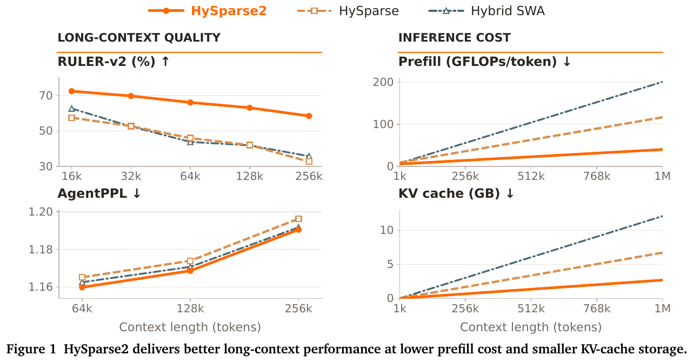
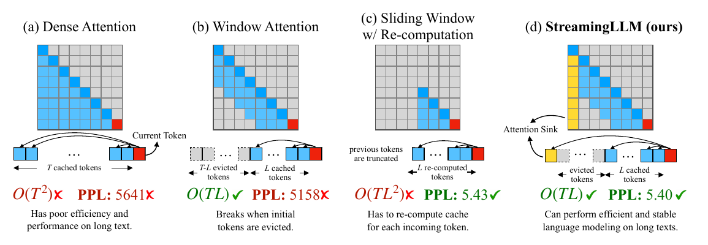

LLM 稀疏注意力与上下文压缩：从免训练选择到两级 KV 共享
本教程与配套调研（llm-sparse-attention-2026）分工：调研横向对比各工作并交叉验证代码；本文纵向把机制讲透——每章按「直觉定位 → 最小可跑 demo → 完整推导 → 真实代码对照 → 设计洞察」五步螺旋展开。符号全文统一：序列长 \(L\)，块大小 \(B\)，top-k 预算 \(k\)，头数 \(H\)，头维 \(d\)，第 \(t\) 个 token 的隐状态记 \(x_t\)。
1. 两本账：注意力的 FLOPs 与 KV cache
1.1 直觉
长上下文成本从来不是一个数，而是两本独立的账。计算账：因果注意力对每个 query 要和全部历史 KV 做内积，prefill 总代价 \(O(L^2 d)\)，decode 每步 \(O(Ld)\) 但受访存带宽而非算力约束。存储账：标准 Transformer 每层都存一份 KV，显存占用 \(O(N_{\text{layer}} \cdot L \cdot H_{kv} \cdot d)\)，与计算完全解耦——把注意力算得再稀疏，cache 一字节不少。多数稀疏注意力论文只动第一本账，这是读这个领域最容易踩的第一个坑。把两本账逼到极限的是 agentic 负载：多轮 agent 每轮生成几十 token 的动作、回灌几千 token 的工具观测，推理变成输入主导——prefill 占大头、KV 随轮数单调膨胀、且回答要跨轮精确取证。HySparse2（arxiv 2609.26368）的开篇图把这个二维问题空间画得最清楚：质量轴（RULER-v2/AgentPPL）× 成本轴（prefill GFLOPs/KV GB）同时比较，缺一轴都是偏科。而所有稀疏方法共同的经验前提是：训好的稠密模型的注意力质量（attention mass）天然高度集中——每个 query 真正需要的 KV 是一小撮，其余贡献近零。本节 demo 先验证这个前提，§2 起的所有方法都是在回答「怎么便宜地找到这一小撮」。

1.2 最小 demo
教学示例——非生产代码。两件事：(a) 用 HySparse2 的真实头配置算两本账；(b) 在「少数方向携带信号 + 背景噪声」的合成 K 上验证 oracle top-k 的近无损性。
import numpy as np
# (a) 两本账：80B-A3B 级配置（HySparse2 Table 1: MQA 64 Q 头 / 1 KV 头, QK 256 / V 256）
L, n_layer, Hq, Hkv, dqk, dv = 1_000_000, 49, 64, 1, 256, 256
flops_prefill = n_layer * Hq * L * L * (dqk + dv) # QK^T + PV，略去 softmax
kv_bytes_fp8 = n_layer * Hkv * L * (dqk + dv) * 1 # FP8 = 1 byte/元素
print(f"prefill ~{flops_prefill/1e15:.0f} PFLOPs, KV = {kv_bytes_fp8/2**30:.2f} GB")
# → KV ≈ 23 GB(全层稠密缓存); HySparse2 实际 2.69 GB —— 差距就是 §7 两级共享砍掉的部分
# (b) oracle top-k 近无损：K 的少数行与 q 对齐（证据），其余各向同性噪声
rng = np.random.default_rng(0)
T, d, k = 8192, 256, 1024
q = rng.standard_normal(d) / d**0.25
K = rng.standard_normal((T, d)) / d**0.25
idx_evi = rng.choice(T, 32, replace=False) # 32 个"证据" token
K[idx_evi] += 2.0 * q / np.linalg.norm(q) # 与 q 方向对齐
V = rng.standard_normal((T, dv))
s = K @ q / np.sqrt(d)
p = np.exp(s - s.max()); p /= p.sum() # 完整 softmax
o_full = p @ V
top = np.argsort(s)[-k:] # oracle top-k 支持集
ps = np.exp(s[top] - s[top].max()); ps /= ps.sum()
o_topk = ps @ V[top]
print(f"top-{k}/{T} 注意力质量占比 {p[top].sum():.4f}, 输出相对误差 "
f"{np.linalg.norm(o_full-o_topk)/np.linalg.norm(o_full):.4f}")
# 典型输出: 质量占比 ~0.9x, 相对误差 ~1e-2 量级 —— 12.5% 预算近似 100% 输出
两个输出合起来就是本教程的问题陈述：稠密缓存的 23 GB 里，任一时刻真正被一个 query 用到的质量不足两成；但你事先不知道是哪两成。
1.3 正式化
单头因果注意力对第 \(t\) 个 query 的输出：
—— 翻译: 分母的归一化使 $p_{t,\cdot}$ 是概率分布——于是「截断到子集 $S_t$」等价于在该分布上做重归一化的期望截断，误差完全由被丢部分的概率质量 $1-\sum_{s\in S_t}p_{t,s}$ 控制，这就是 top-k 近无损性的全部数学内容。
稀疏注意力的一般形式是给每个 query 指定支持集 \(S_t \subseteq \{1,\dots,t\}\)，\(|S_t| = k \ll t\)：
—— 翻译: 误差上界只看「漏掉的概率质量」，与 $L$ 无关——所以同一个 $k$ 在 8k 和 1M 上下文上可以同样好，前提是选择器召回了高质量 token；一切方法的差异都压缩在「$S_t$ 怎么来」这一件事上。
两本账的解析式（\(N_\ell\) 层、\(H_{kv}\) 个 KV 头、精度 \(b\) 字节）：
—— 翻译: 两式没有公共的可约项——$S_t$ 再小也不动 $M_{kv}$，GQA/MLA 再省也不动 $L^2$。§2–§6 攻第一式，§7 攻第二式里的 $N_\ell$ 因子，这是全文的路线图。
1.4 代码引用
「稠密模型天然稀疏」不只是论文观察，它支撑着生产系统：MInference 在不改权重的前提下，用末 64 个 query 在线估计出每个头的稀疏索引，1M 上下文 prefill 从 30 分钟压到 3 分钟。
sources/repos/microsoft-MInference/minference/modules/minference_forward.py:L381-L396 — Vertical-Slash 在线估计:末 64 query 估注意力,列和/对角和 topk 后调稀疏内核
def vertical_and_slash_kernel(q, k, v, vertical_size, slash_size):
vertical_size, slash_size = min(q_len, max(vertical_size, 30)), min(q_len, max(slash_size, 50))
last_q = min(64, q_len)
qk = torch.einsum(f'bhmk, bhnk -> bhmn', q[:,:,-last_q:,:], k) / math.sqrt(self.head_dim)
qk[:, :, :, -last_q:] = torch.where(LAST_Q_MASK[...,-last_q:,-last_q:].to(q.device), qk[:, :, :, -last_q:], -torch.inf)
qk = torch.nn.functional.softmax(qk, dim=-1, dtype=torch.float32)
vertical = qk.sum(-2, keepdim=True)
vertical[...,:30] = torch.inf
vertical_topk = torch.topk(vertical, vertical_size, -1).indices
slash = sum_all_diagonal_matrix(qk)[...,:-last_q + 1]
slash[...,-100:] = torch.inf
slash_topk = slash
slash = (q_len - 1) - torch.topk(slash, slash_size, -1).indices
return vertical_slash_sparse_attention(q, k, v, vertical_topk, slash)
对照：last_q = min(64, q_len) 即「用末 64 个 query 的注意力分布代表全体」——这是对 §1.3 中 \(p_{t,\cdot}\) 跨 \(t\) 稳定性的押注；vertical = qk.sum(-2) 沿 query 维求和得到每列（每个 key）的总质量，topk 出「垂直线」；sum_all_diagonal_matrix 沿对角线求和捕捉「以固定相对位移反复被注意」的 slash 模式；vertical[...,:30] = inf 无条件保留前 30 个 token——§2 的 attention sink 在生产代码里的直接体现。
1.5 洞察
- 稀疏度 ≠ 加速。90% 稀疏在理论上省 10×，实际 kernel 若访存不连续、Tensor Core 利用率掉，就只剩 2-3×；NSA 整篇论文一半篇幅在讲这个 gap。读任何「加速比」先问三件事：哪个阶段（prefill/decode/训练）、什么口径（kernel/端到端/FLOPs 折算）、什么硬件。
- 两本账要分开审。后文每个方法先问「它动了哪本账」：§2-§6 全是计算账（Quest 甚至刻意不动存储账），只有 §7 的跨层共享和驱逐/MLA 真正砍存储。
- 误差上界里的 \(\max_s \|v_s\|\) 提示了一个失效模式：当关键信息藏在低注意力分数、高 value 范数的 token 里（罕见但存在，如数值表格），top-k 截断的实际误差会比质量占比暗示的更大——这是所有基于分数选择的方法共享的盲区。
2. 免训练下界：sink、驱逐与查询感知选择
2.1 直觉
不动任何权重，推理期能白拿多少稀疏收益？这条线四个代表作各利用一种「免费信号」，也各自暴露一个天花板。StreamingLLM（arxiv 2309.17453）回答的是最朴素方案为什么崩：只保最近 \(w\) 个 token 的滑窗 cache，一旦最早的几个 token 被驱逐，Llama-2-13B 的 PPL 从 5.40 爆到 5158——因为 softmax 要求每行注意力和为 1，当 query 与多数历史都不匹配时，模型把多余质量倾倒给初始几个 token（attention sink）；驱逐它们等于抽掉归一化的垫脚石。解法便宜到离谱：永久保留 4 个初始 token + 滑窗，无限流式生成就稳定了。H2O（arxiv 2306.14048）把「保谁」从位置启发升级成内容启发：按历史累积注意力分数识别 heavy hitter，预算内保「重击手+最近」两类，其余驱逐。Quest（arxiv 2406.10774）指出驱逐的根本缺陷——不可逆：agent 第 10 轮突然要引用第 2 轮被驱逐的工具输出,找不回来就是找不回来。它改成全保留、选择读:KV 按 16-token page 组织,每 page 只存逐维 min/max 两条元数据,decode 时用当前 query 对元数据算重要性上界,只把 top-k page 载入 SRAM。MInference(§1.4 已见)则把同样的免训练思路搬到 prefill 侧。这四个工作共同构成后文一切可学习方法的基线与下界:任何要花训练预算的方案,必须先赢过它们。

2.2 最小 demo
教学示例——非生产代码。实现 Quest 的 page min/max 上界估计,验证两件事:上界性(估计分 ≥ page 内真实最大分)与 top-k page 召回率。
import numpy as np
rng = np.random.default_rng(1)
H, T, d, P = 8, 4096, 128, 16 # 8 头, 4096 token, page 大小 16
n_pages, budget = T // P, 16 # 每头选 16/256 个 page
q = rng.standard_normal((H, d))
K = rng.standard_normal((H, T, d))
Kp = K.reshape(H, n_pages, P, d)
kmin, kmax = Kp.min(axis=2), Kp.max(axis=2) # 每 page 逐维极值 —— 仅存的元数据
# Quest 上界: 对每一维取 max(q_j*min_j, q_j*max_j) 再求和(符号感知)
ub = np.maximum(q[:, None, :] * kmin, q[:, None, :] * kmax).sum(-1) # [H, n_pages]
s_true = np.einsum('hd,htd->ht', q, K) # 真实打分
s_page = s_true.reshape(H, n_pages, P).max(-1) # page 内真实最大分
assert (ub >= s_page - 1e-6).all() # 上界性: 永不低估 → 不漏高分 page
sel = np.argsort(ub, axis=-1)[:, -budget:] # Quest 选的 page
best = np.argsort(s_page, axis=-1)[:, -budget:] # oracle page
recall = np.mean([len(set(sel[h]) & set(best[h])) / budget for h in range(H)])
print(f"top-{budget} page 召回率(随机正态 Q/K 最难情形): {recall:.2f}")
# 实际 LLM 的 K 有聚类结构, 召回远高于此下界; 上界性保证"该看的 page 不会被漏判"
关键在 assert 行:无论数据分布如何,上界性是代数成立的——这是 Quest 与一切「学习型估计」在可靠性上的本质区别(学习型可能漏判,上界型只会多判)。
2.3 正式化
sink 的成因。softmax 的行归一化约束 \(\sum_s p_{t,s}=1\) 没有「弃权」选项。当 \(q_t\) 与所有语义相关 key 的内积都小时,质量必须有去处;自回归训练中初始 token 对几乎所有位置可见,梯度把它们训练成了通用的质量回收站:
—— 翻译: 危险不在丢掉 $s_0$ 本身的信息(它常是 BOS,语义为零),而在于分母少了最大的一项后,原本被压到 $10^{-4}$ 量级的噪声项全体放大几个数量级——模型输出被它从未学过要依赖的噪声淹没。gpt-oss 把 sink 做成每头可学习偏置(§8 代码),等于给 softmax 显式装了泄压阀。
Quest 上界。对 page \(\mathcal P\) 存 \(m_j=\min_{s\in\mathcal P}k_{s,j}\)、\(M_j=\max_{s\in\mathcal P}k_{s,j}\),则对任意 \(s\in\mathcal P\):
—— 翻译: 逐维取 $\max$ 的那步用了「$q_j$ 为正时上界在 $M_j$、为负时在 $m_j$」——符号感知是关键,直接用 $M_j$ 会在负权维度上把上界算错方向;代价是上界的松紧随 page 内 key 的方差增大而变松,page 越大、召回保证越弱,这就是 Quest 用 16 这么小的 page 的原因。
H2O 的累积分数:token \(s\) 的重要性 \(\mathrm{imp}(s)=\sum_{t > s} p_{t,s}\),预算 \(k\) 内保留 \(\mathrm{imp}\) 最大者与最近 \(w\) 个。它是对「未来 query 会像历史 query 一样使用 \(s\)」的平稳性假设——多轮 agent 恰好系统性破坏该假设(新一轮话题切换),这是驱逐线在 agentic 负载上的结构性短板。
2.4 代码引用
sources/repos/mit-han-lab-quest/evaluation/quest_attention.py:L146-L184 — Quest 查询感知 page 打分:符号翻转后 amax 池化的 min/max 上界估计
sign = (query_states > 0) + (~(query_states > 0)) * -1
max_key = key_states * sign
postive_query = query_states * sign
# expend max_key to be divisible by chunk_size
seq_length = max_key.shape[-2]
padding_length = self.chunk_size - ((seq_length - 1) % self.chunk_size + 1)
max_key = torch.cat(
[
max_key,
torch.ones(
(max_key.shape[0], max_key.shape[1], padding_length, max_key.shape[3]),
device=max_key.device,
)
* torch.tensor(torch.finfo(max_key.dtype).min),
],
dim=-2,
)
# chunk max_key into chunk_size tokens
chunk_max_key = max_key.reshape(
max_key.shape[0],
max_key.shape[1],
max_key.shape[2] // self.chunk_size,
self.chunk_size,
max_key.shape[3],
).amax(dim=-2)
# duplicate chunk_max_key chunk_size times
chunk_max_key = chunk_max_key.unsqueeze(-2).repeat(1, 1, 1, self.chunk_size, 1)
# reshape chunk_max_key to the original shape
chunk_max_key = chunk_max_key.reshape(
chunk_max_key.shape[0], chunk_max_key.shape[1], -1, chunk_max_key.shape[-1]
)[:, :, :seq_length, :]
quantized_weight = torch.matmul(
postive_query.float(),
chunk_max_key.transpose(2, 3),
)
对照:实现用了一个比 §2.3 公式更紧凑的技巧——先用 sign 把 query 翻成全正(postive_query),同时把 key 翻号(max_key = key_states * sign),于是 \(\max(q_jm_j,q_jM_j)\) 退化成对翻号后 key 的直接 amax 池化 + 一次普通矩阵乘(quantized_weight),把逐维分支判断变成了两个张量算子;demo 里的 np.maximum(q*kmin, q*kmax) 与这段代码在数学上逐项相等。
2.5 洞察
- 驱逐 vs 全保留是「显存 vs 可逆性」的互换,没有免费中间态:H2O/SnapKV 真省显存但错了找不回,Quest 永不丢但 1M 上下文的全量 KV 常驻就是 20+ GB——这正是 §7 结构性省存储的动机。
- SnapKV(arxiv 2404.14469)用 prompt 末窗注意力投票选 KV,在「长 prompt 单轮问答」上近无损,但其选择隐式绑定末窗话题——多轮 agent 的下一问未知,末窗投票天然过拟合上一轮;选免训练压缩方案前先确认负载是单轮还是多轮。
- 免训练线的真正遗产是给可学习线定了对照协议:SeerAttention 的评测表直接以 MInference/MoA 为基线——花 0.5B token 训练换来的召回差距,就是「学习」的全部增值(§3)。
3. 把选择变成可学习：SeerAttention 的 AttnGate 自蒸馏
3.1 直觉
§2 的免训练方法共享一个结构性弱点：选择信号是启发式固定的（位置、累积分数、min/max 几何），而真实注意力的稀疏模式随头、随层、随输入内容剧烈变化——MInference 要离线给每个头分类成三种模式，正说明单一启发式罩不住。SeerAttention（arxiv 2410.13276）的回答是把块级选择器做成可学习模块 AttnGate，并抓住了一个让训练成本塌缩的事实：门控的监督信号是免费的。MoE 的路由器必须从零探索专家分配，而注意力门控不同——稠密模型自己的注意力图就标出了每个块该不该算：把 \(L\times L\) 注意力图做 \(B\times B\) 的 2D 最大池化，得到的块级图就是现成教师。于是训练流程变成纯蒸馏：冻结全部原权重，只训门控（池化 Q/K → 线性层 → 相乘），KL 对齐教师，Llama-3.1-8B 只花 0.5B token / 约 40 A100 GPU 时。在谱系中它是「可学习稀疏」的起点：比 §2 多一次轻量训练换稳健召回（128k、90% 稀疏下 7.3× prefill 加速且精度超 MInference/MoA），比 §4 的 NSA 少改一切——不动主干、不碰预训练。工程上最被低估的一步是教师的来历：现代 LLM 全走 FlashAttention，根本不物化注意力矩阵；SeerAttention 改了 FlashAttention 内核，让它在算注意力的同时顺带输出 maxpool 后的块级图,绕开 \(O(L^2)\) 显存（§3.4 第二段代码）。

3.2 最小 demo
教学示例——非生产代码。完整走一遍自蒸馏回路：真实形状的 Q/K、maxpool 教师、池化+线性门控、KL 损失、训练后块召回。
import torch, torch.nn.functional as F
torch.manual_seed(0)
B, H, T, d, Bk = 2, 4, 1024, 64, 64 # 块大小 64 → 16x16 块图
nb = T // Bk
Q, K = torch.randn(B, H, T, d), torch.randn(B, H, T, d)
K[:, :, ::97] += Q[:, :, ::97] # 注入结构: 周期性相关 token
with torch.no_grad(): # 教师: 2D maxpool 的注意力图
A = F.softmax(Q @ K.transpose(-1,-2) / d**0.5
+ torch.full((T,T), -1e9).triu(1), dim=-1)
gt = F.max_pool2d(A.view(B*H, 1, T, T), Bk).view(B, H, nb, nb)
gt = gt / gt.sum(-1, keepdim=True) # 行归一化成分布
Wq, Wk = (torch.randn(H, d, d, requires_grad=True) for _ in range(2))
opt = torch.optim.Adam([Wq, Wk], lr=3e-3)
for step in range(200): # 学生: avg-pool Q/K → 线性 → 相乘
qp = Q.view(B, H, nb, Bk, d).mean(3) @ Wq # [B,H,nb,d]
kp = K.view(B, H, nb, Bk, d).mean(3) @ Wk
score = F.log_softmax(qp @ kp.transpose(-1,-2) / d**0.5
+ torch.full((nb,nb), -1e9).triu(1), dim=-1)
loss = F.kl_div(score, gt, reduction='batchmean')
opt.zero_grad(); loss.backward(); opt.step()
k = 4 # 每行选 4/16 块, 查训练后召回
sel = score.exp().topk(k, -1).indices
best = gt.topk(k, -1).indices
hit = torch.tensor([[len(set(sel[b,h,r].tolist()) & set(best[b,h,r].tolist()))
for r in range(1, nb)] for b in range(B) for h in range(H)], dtype=torch.float)
print(f"KL {loss.item():.4f}, top-{k} 块召回 {hit.mean().item()/k:.2f}")
两百步、无一个主干参数参与梯度——这个成本量级就是「教师免费」的直接兑现。
3.3 正式化
教师与学生：
—— 翻译: 教师用 max 而非 mean 池化是刻意的——块内只要有一个高分 token,整块就必须算（块稀疏是全有或全无的）;mean 池化会把「一根针 + 63 个零」平均成低分,恰好漏掉最该保的块。
—— 翻译: 选 KL 而非 MSE,因为门控 softmax 后行和恒为 1,KL 只约束**相对排序与集中度**——推理时用的正是 TopK/阈值这类序统计,绝对幅值无关紧要;MSE 会浪费容量去拟合无关的幅值。
块级 RoPE。若门控直接吃 RoPE 之后的 Q/K,池化会破坏旋转结构:RoPE 的相对位置性质依赖 \(\langle R_{\theta m}q, R_{\theta n}k\rangle\) 只取决于 \(m-n\),对块内 \(B\) 个不同转角的向量取平均后该性质不复存在,门控在超过训练长度处召回崩塌。SeerAttention 的解法:门控吃 RoPE 之前的 Q/K,池化后在块级重新施加转角缩放的 RoPE:
—— 翻译: 块索引把位置粒度粗化了 $B$ 倍,转速同除以 $B$ 才能让「块间相对位移」的编码密度与原 token 级一致——这一行是门控能外推到训练长度之外的全部原因,消融里去掉它 8k 训练的门控在更长评测上直接失效。
3.4 代码引用
sources/repos/microsoft-SeerAttention/seer_attn/prefill_sparse/attn_gate.py:L71-L105 — AttnGate.forward:Q/K 池化→MultiHeadLinear→块级 RoPE→矩阵乘得块分数
q_len = q.shape[1]
if q_len == 1:
return None
q_pooled = [pool_func(q, kernel_size=[self.block_size, 1, 1], stride=[self.block_size, 1, 1], ceil_mode=True) for pool_func in self.q_pooling_funcs]
q = torch.cat(q_pooled, dim=-1)
if self.mask_linear_q is not None:
q = self.mask_linear_q(q)
k_pooled = [pool_func(k, kernel_size=[self.block_size, 1, 1], stride=[self.block_size, 1, 1], ceil_mode=True) for pool_func in self.k_pooling_funcs]
k = torch.cat(k_pooled, dim=-1)
k = self.mask_linear_k(k)
if position_embeddings is not None:
cos, sin = position_embeddings
if self.use_flash_rope:
q = apply_rotary_emb_func(q, cos, sin, False, True, cu_seqlens=None, max_seqlen=q_len)
k = apply_rotary_emb_func(k, cos, sin, False, True, cu_seqlens=None, max_seqlen=q_len)
else:
q, k = apply_rotary_pos_emb(q, k, cos, sin, unsqueeze_dim=2)
q, k = q.transpose(1, 2), k.transpose(1, 2)
if k.shape[1] < self.num_q_head:
k = repeat_kv(k, self.num_q_head // k.shape[1])
attn = torch.matmul(q, k.transpose(-1, -2)) * self.scale
# print("attn", attn, "mask", attention_mask)
if attention_mask.dtype == torch.bool:
attn = attn.masked_fill(~attention_mask, -1e9)
else:
attn = attn + attention_mask
if use_softmax:
attn = F.softmax(attn, dim=-1)
return attn
对照:q_pooling_funcs/k_pooling_funcs 是池化函数列表后接 torch.cat——论文消融的结论(Q 用 avg、K 要 max+min+avg 三路拼接,因为 K 的离群值多、单一池化丢信息)就落在这两行的组合上;apply_rotary_pos_emb 作用在池化之后的块级表示上,即 §3.3 的 \(\theta'=\theta/B\) 块级 RoPE;最后的 matmul + softmax 对应 \(score\) 公式,形状是 \([\,nb \times nb\,]\) 而非 \([L\times L]\)——门控全程只有 \(1/B^2\) 的注意力图开销。
sources/repos/microsoft-SeerAttention/seer_attn/modules/attention_distill.py:L11-L40 — 蒸馏前向:改版 FlashAttention 内核 attn_with_pooling 顺带产出 maxpool 教师掩码
def attention_distill_forward(
query_states: torch.Tensor, ## [batch, seq_len, num_heads, head_dim]
key_states: torch.Tensor, ## [batch, seq_len, num_heads, head_dim]
value_states: torch.Tensor, ## [batch, seq_len, num_heads, head_dim]
softmax_scale: Optional[float] = None,
block_size: Optional[int] = None,
num_key_value_groups: Optional[int] = 1,
**kwargs,
):
query_states = query_states.transpose(1, 2).contiguous()
key_states = key_states.transpose(1, 2).contiguous()
value_states = value_states.transpose(1, 2).contiguous()
key_states = repeat_kv(key_states, num_key_value_groups)
value_states = repeat_kv(value_states, num_key_value_groups)
attn_output, mask_ground_truth = attn_with_pooling(
query_states,
key_states,
value_states,
True,
softmax_scale,
block_size,
)
attn_output = attn_output.transpose(1, 2).contiguous()
return attn_output, mask_ground_truth
对照:attn_with_pooling 一次调用同时返回 attn_output(正常前向,模型照常算 loss 的通路)与 mask_ground_truth(§3.3 的 \(gt\))——教师在 FlashAttention 的分块循环里在线做 max 归约,从未物化 \(L\times L\) 矩阵;demo 里那个 F.max_pool2d(A) 在真实尺度下不可行,这个内核就是它的 \(O(L)\) 显存替身。
3.5 洞察
- 「教师免费」是整条可学习稀疏路线的经济学基础:同样思想在 §6 被 DSA 放大——闪电索引器的教师同样是主注意力分布,同样 KL,同样先冻结主干;SeerAttention 证明了这条路在 8B/0.5B token 尺度就通。
- 块门控的天花板来自有损压缩的级联:池化(块内信息折叠)→线性(表达受限)→块粒度(整块进出)。稀疏度推过 90% 后召回滑坡,而 agentic 负载需要的恰是单 token 粒度——这正是 §6 token 级索引器与 §7 oracle 路线各自的切入缺口。
- 后训练改装(本节)与原生预训练(§4)不是竞争而是不同的约束集:手里只有训好的稠密模型、预算 ~40 GPU 时 → SeerAttention 式蒸馏;能从头训 → §4 把稀疏做进训练图,反向传播也享受加速。
4. 原生稀疏预训练 I：NSA 的压缩-选择-滑窗三分支
4.1 直觉
NSA（arxiv 2502.11089）开篇把推理期稀疏方法(§2、§3)的两个结构性缺陷摆上台面。假象一:端到端加速不成立——多数方法只稀疏化一个阶段(prefill 或 decode),另一阶段仍稠密,阶段化(phase specialization)让理论稀疏度兑换不成墙钟时间;且训练阶段完全没份,长上下文预训练的天价成本一分不省。假象二:事后稀疏的精度天花板——稠密预训练出的注意力分布没有为稀疏化做过任何适配,推理期强行截断,模型无法学会把关键信息「摆放」到容易被选中的位置。NSA 的回答是把稀疏做成模型的原生形态:预训练第一步起,每个 query 就只看三条并行通路的输出——压缩分支(每 \(l=32\) 个 token 经可学习 MLP 压成一个摘要 token,query 对全部摘要做注意力,管全局概貌)、选择分支(取 top-\(n=16\) 个 \(l'=64\) 的原始块做精确注意力,管细粒度取证)、滑窗分支(\(w=512\),管局部连续性),三分支各有独立 KV 投影,由逐头 sigmoid 门加权求和。点睛之笔是选择信号免费:压缩分支算出的注意力分数本身就是块重要性的估计,选择分支直接复用它取 top-k,不需要任何独立索引器或辅助损失。27B MoE 骨干、270B token @8k 预训练的结果:通用/长上下文/推理基准持平或超过全注意力,64k 长度 Triton kernel 前向 9.0×、反向 6.0×,decode 访存折算 11.6×。

4.2 最小 demo
教学示例——非生产代码。单头 mini-NSA 前向:压缩→借分选块→三支融合,并与全注意力对照输出误差。
import numpy as np
rng = np.random.default_rng(2)
T, d, l, lp, n_sel, w = 4096, 64, 32, 64, 8, 256 # 压缩块 32, 选择块 64, 选 8 块, 窗 256
q = rng.standard_normal(d)
K, V = rng.standard_normal((2, T, d))
K[::51] += 0.8 * q / np.linalg.norm(q) # 散布相关 token
def sm(s): e = np.exp(s - s.max()); return e / e.sum()
# ① 压缩分支: 每 l 个 token mean 成摘要(论文为可学习 MLP, mean 是其零阶近似)
Kc = K.reshape(T//l, l, d).mean(1); Vc = V.reshape(T//l, l, d).mean(1)
p_cmp = sm(Kc @ q / np.sqrt(d))
o_cmp = p_cmp @ Vc
# ② 选择分支: 压缩分数聚合到 l' 粒度 → top-n 块 → 块内精确注意力
blk_score = p_cmp.reshape(T//lp, lp//l).sum(1) # Eq.(9) 的离散近似
top_blk = np.argsort(blk_score)[-n_sel:]
idx = np.concatenate([np.arange(b*lp, (b+1)*lp) for b in sorted(top_blk)])
p_slc = sm(K[idx] @ q / np.sqrt(d)); o_slc = p_slc @ V[idx]
# ③ 滑窗分支 + ④ sigmoid 门融合(门值取训练后典型量级)
p_swa = sm(K[-w:] @ q / np.sqrt(d)); o_swa = p_swa @ V[-w:]
g = 1 / (1 + np.exp(-np.array([0.0, 1.0, 0.0]))) # g_cmp, g_slc, g_swa
o_nsa = g[0]*o_cmp + g[1]*o_slc + g[2]*o_swa
o_full = sm(K @ q / np.sqrt(d)) @ V
cos = o_nsa @ o_full / np.linalg.norm(o_nsa) / np.linalg.norm(o_full)
kv_touched = T//l + n_sel*lp + w
print(f"访问 KV {kv_touched}/{T} ({kv_touched/T:.1%}), 与全注意力输出余弦 {cos:.3f}")
注意 ② 的入参只有 p_cmp——选择分支全程没有自己的打分计算,这就是「选择信号免费」在 10 行里的样子。
4.3 正式化
三分支共用 query,各自拥有独立的 K/V 变换,输出门控求和:
—— 翻译: 三支独立 K/V 投影不是冗余——让梯度在「全局摘要/精确取证/局部」三条功能上解耦,避免单一 KV 空间里三种目标互相拉扯;sigmoid 门(而非 softmax 门)允许三支同时高权重,因为三支覆盖的信息区域本来就不互斥。
压缩分支把第 \(i\) 个长度-\(l\) 块映射为摘要 key \(\tilde k_i = \phi\big(k_{il:il+l}\big)\)(\(\phi\) 为带块内位置编码的 MLP),其注意力分数直接给出块重要性;选择块粒度 \(l' \ne l\) 时按覆盖关系聚合:
—— 翻译: 这一步让「索引」的边际成本为零,但也埋下精度上限——选择质量永远不会好于压缩表征的质量,$\phi$ 压掉的信息在选块时找不回来;§6 的 DSA(独立索引器)与 §7 的 HySparse(真实注意力当索引)分别是对这个耦合的两种解绑。
GQA 约束:同组内 \(G\) 个 query 头必须共享同一个 \(S_t\)(组内对各头 \(p^{\mathrm{slc}}\) 求和后统一 TopK)。
—— 翻译: 这不是算法偏好而是访存法则——GQA 的意义就在组内共享 KV 读取,若各头各选各的块,decode 时一次合并读取裂成 $G$ 次随机读,稀疏省下的 FLOPs 全赔给访存;硬件约束直接改写了算法设计,这是 NSA「hardware-aligned」的核心含义。
4.4 代码引用
NSA 无官方开源;以下引自 fla-org(flash-linear-attention 团队)的社区学术实现,结构忠实于论文。
sources/repos/fla-org-native-sparse-attention/native_sparse_attention/modeling_nsa.py:L76-L100 — NSAAttention.forward 开头:QKV 投影 + 三分支 sigmoid 门 g_cmp/g_slc/g_swa
def forward(
self,
hidden_states: torch.Tensor,
attention_mask: Optional[torch.LongTensor] = None,
past_key_values: Optional[Cache] = None,
output_attentions: bool = False,
use_cache: bool = False,
**kwargs,
) -> Tuple[torch.Tensor, Optional[torch.Tensor], Optional[Tuple[torch.Tensor]]]:
if attention_mask is not None:
assert len(attention_mask.shape) == 2, (
"Expected attention_mask as a 0-1 matrix with shape [batch_size, seq_len] "
"for padding purposes (0 indicating padding). "
"Arbitrary attention masks of shape [batch_size, seq_len, seq_len] are not allowed."
)
batch_size, seq_len, _ = hidden_states.size()
q = rearrange(self.q_proj(hidden_states), '... (h d) -> ... h d', d=self.head_dim)
k = rearrange(self.k_proj(hidden_states), '... (h d) -> ... h d', d=self.head_dim)
v = rearrange(self.v_proj(hidden_states), '... (h d) -> ... h d', d=self.head_dim)
g = rearrange(self.g_proj(hidden_states), '... (h d) -> ... h d', d=3)
g_cmp, g_slc, g_swa = g.sigmoid().unbind(-1)
cu_seqlens = kwargs.get('cu_seqlens', None)
sources/repos/fla-org-native-sparse-attention/native_sparse_attention/modeling_nsa.py:L129-L149 — parallel_nsa 调用:三门 + block_size/block_counts/window_size 进融合内核
o = parallel_nsa(
q=q,
k=k,
v=v,
g_cmp=g_cmp,
g_slc=g_slc,
g_swa=g_swa,
block_size=self.block_size,
block_counts=self.block_counts,
window_size=self.window_size,
cu_seqlens=cu_seqlens,
head_first=False
)
o = o.reshape(batch_size, seq_len, -1)
o = self.o_proj(o)
if not output_attentions:
attentions = None
return o, attentions, past_key_values
对照:g_proj 输出每头 3 个标量、sigmoid().unbind(-1) 拆成 \(g^{\mathrm{cmp}},g^{\mathrm{slc}},g^{\mathrm{swa}}\)——即 §4.3 第一式的门;三支融合、压缩分数复用选块、滑窗拼接全部折叠进 parallel_nsa 这一个 Triton 内核调用(block_counts=16, window_size=512 即论文配置)——三分支若拆成三次 kernel 启动,中间结果三进三出 HBM,9× 的前向加速就不存在了;「融合进单内核」不是工程洁癖,是论文速度主张的成立条件。
4.5 洞察
- 配置数字的因果链:\(l=32\)(压缩粒度)足够细才能给出可用的块分数;\(l'=64\) 对齐 Tensor Core 的分块;\(n=16\) 含强制的 1 个初始块(sink,呼应 §2)+ 2 个局部块;\(w=512\) 远大于 gpt-oss 的 128——因为 NSA 的滑窗要在预训练中承担全部局部建模,而非推理期补丁。
- 「训练也加速」是原生路线独有的红利:反向 6.0× 意味着同算力预算能多训 token——这笔账免训练方法(§2)原理上拿不到,后训练蒸馏(§3/§6)只拿到一小段。
- 三分支的隐性代价是参数与 cache 三倍于单支(三套 KV 投影、压缩分支还要常驻摘要 cache)——存储账不降反升;MoBA(§5)用零新增参数做同一件事,HySparse2(§7)则把三支的功能拆到层级去共享,这两条都是对 NSA 结构成本的反动。
5. 原生稀疏预训练 II：MoBA 的 MoE 式块路由
5.1 直觉
NSA 把稀疏做进预训练的代价是一套全新注意力模块:三套 KV 投影、压缩 MLP、门控投影,只能从头训。Moonshot 的 MoBA(arxiv 2502.13189)问的是反问题:已有的全注意力检查点,能不能几乎零成本地切到稀疏态,甚至训练中途来回切?它的解法是把 MoE 的 top-k 路由器原封不动搬进注意力——上下文切成 \(n\) 个块,每块相当于一个「专家」,query 路由到最相关的 \(k\) 个块。关键决定是门控完全无参数:块代表 = 块内 key 的 mean-pool,亲和分 = query 与块代表的内积,top-k 即路由。没有任何新权重,意味着全注意力 ⇄ MoBA 是同一组参数的两种前向模式——Moonshot 的训练配方正是利用这点:预训练大部分时间走 MoBA(省算力),末段切回全注意力(校准生成质量),SFT 阶段末 3 层保持全注意力。设计哲学自称「less structure」:不预设 sink、不预设滑窗分支,唯一的硬约束是当前块强制入选(门控值 \(+\infty\))和未来块屏蔽(\(-\infty\))——局部性靠路由规则而非独立分支保证。Llama-8B 续训至 1M 上下文(块 4096、top-k 12,1M 处稀疏度 95.31%):128K 语言建模 0.7818 vs 全注意力 0.7849,近无损;已部署于 Kimi 生产线。与 NSA 的对照纯粹而深刻:可学习门 vs 无参门、三分支 vs 单机制、从头训 vs 热切换——两者在 2502 同月发布,是「原生稀疏」设计空间的两极。

5.2 最小 demo
教学示例——非生产代码。单头 MoBA 前向,验证无参路由的近无损性与稀疏账。
import numpy as np
rng = np.random.default_rng(3)
T, d, Bc, topk = 8192, 128, 512, 3 # 16 块, 每 query 选 3 块
Q = rng.standard_normal((T, d)); K, V = rng.standard_normal((2, T, d))
K[1200:1210] += 1.5; Q[-64:] += 1.5 # 植入跨块关联(证据在块 2)
nb = T // Bc
centroid = K.reshape(nb, Bc, d).mean(1) # 块代表: mean-pool(零参数)
t = T - 1 # 看最后一个 query 的路由
s = centroid @ Q[t] / np.sqrt(d) # 亲和分 s_i =
cur = t // Bc
s[cur] = np.inf # 自块强制入选
s[cur+1:] = -np.inf # 未来块因果屏蔽
sel = np.sort(np.argsort(s)[-topk:])
idx = np.concatenate([np.arange(b*Bc, min((b+1)*Bc, t+1)) for b in sel])
def sm(x): e = np.exp(x - x.max()); return e / e.sum()
o_moba = sm(K[idx] @ Q[t] / np.sqrt(d)) @ V[idx]
o_full = sm(K[:t+1] @ Q[t] / np.sqrt(d)) @ V[:t+1]
cos = o_moba @ o_full / np.linalg.norm(o_moba) / np.linalg.norm(o_full)
print(f"选中块 {sel.tolist()}(证据块 {1200//Bc} 被召回: {1200//Bc in sel}), "
f"KV 触达 {len(idx)}/{t+1} ({len(idx)/(t+1):.1%}), 输出余弦 {cos:.3f}")
mean-pool 能召回证据块的条件写在数据里:块内相关 token 的方向信号经平均后仍要高出噪声底——块越大、信号越稀,这个条件越脆弱,这正是 §8 粒度实验要量化的失效模式。
5.3 正式化
MoBA 对标准注意力的唯一修改是把 KV 限制到选中块的并集 \(I\):
—— 翻译: 形式上与 §1.3 的一般稀疏注意力完全同构——MoBA 的全部创新压缩在「$g_i$ 怎么来」:它证明了支持集生成器可以弱到无参数,只要粒度够粗(块级)且强制自块兜底局部。
—— 翻译: $s_i = q^\top \bar k_i$ 恰是该块内平均注意力 logit 的一阶近似(Jensen 意义下偏低估高方差块)——所以 mean-pool 路由在「块内 token 同质」时近乎最优,在「一根针 + 大量噪声」时系统性漏块;与 §3 教师用 max-pool 的选择形成镜像,两者的差异就是对块内分布的两种假设。
因果性的两条块级规则:对位置 \(t\)(所在块 \(c = \lceil t/B\rceil\)),(i) \(j \gt c\) 的块 \(s_j \leftarrow -\infty\)(未来块不可见——注意粒度是块,块内仍按 token 级因果掩码);(ii) \(s_c \leftarrow +\infty\)(自块必选)。规则 (ii) 承担了 NSA 中整个滑窗分支的职能——零参数、零额外 cache,代价是局部覆盖固定为「当前块」,不能像 \(w\) 那样独立调节。
5.4 代码引用
sources/repos/MoonshotAI-MoBA/moba/moba_naive.py:L43-L80 — MoBA 门控全逻辑:块 mean-pool→einsum 亲和分→未来块-inf/自块+inf→topk 掩码
key_gate_weight = []
batch_size = batch_end - batch_start
num_block = math.ceil(batch_size / moba_chunk_size)
for block_idx in range(0, num_block):
block_start = block_idx * moba_chunk_size
block_end = min(batch_size, block_start + moba_chunk_size)
key_gate_weight.append(k_[block_start:block_end].mean(dim=0, keepdim=True))
key_gate_weight = torch.cat(key_gate_weight, dim=0) # [ N, H, D ]
# calc & mask gate
# use fp32 to avoid precision issue in bf16
q_ = q_.type(torch.float32)
key_gate_weight = key_gate_weight.type(torch.float32)
gate = torch.einsum("shd,nhd->hsn", q_, key_gate_weight) # [ H, S, N ]
key_gate_weight = key_gate_weight.type_as(k)
q_ = q_.type_as(k)
for i in range(num_block):
# select the future Qs that can attend to KV chunk i
gate[:, : (i + 1) * moba_chunk_size, i] = float("-inf")
gate[:, i * moba_chunk_size : (i + 1) * moba_chunk_size, i] = float("inf")
# gate_top_k_idx = gate_top_k_val = [ H S K ]
gate_top_k_val, gate_top_k_idx = torch.topk(
gate, k=min(moba_topk, num_block), dim=-1, largest=True, sorted=False
)
gate_top_k_val, _ = gate_top_k_val.min(dim=-1) # [ H, S ]
need_attend = gate >= gate_top_k_val.unsqueeze(-1)
# add gate_idx_mask in case of there is cornercases of same topk val been selected
gate_idx_mask = torch.zeros(
need_attend.shape, dtype=torch.bool, device=q.device
)
gate_idx_mask = gate_idx_mask.scatter_(dim=-1, index=gate_top_k_idx, value=True)
need_attend = torch.logical_and(need_attend, gate_idx_mask)
gate[need_attend] = 0
gate[~need_attend] = -float("inf")
gate = gate.repeat_interleave(moba_chunk_size, dim=-1)[
:, :, :batch_size
] # [ H, S, S ]
gate.masked_fill_(
torch.ones_like(gate, dtype=torch.bool).tril().logical_not(), -float("inf")
对照:mean(dim=0, keepdim=True) 循环即 \(\mathrm{mean\_pool}(K[I_i])\);einsum("shd,nhd->hsn") 即 \(s_i\) 的全头并行版;双重赋值 -inf/inf 两行精确对应 §5.3 的因果规则 (i)(ii)——注意顺序:先整列 -inf 屏未来,再对自块行段覆写 +inf,顺序颠倒会把自块也屏掉;topk 后用 gate >= gate_top_k_val.min 的阈值展开而非直接用索引,是为了向量化成 token 级布尔掩码,gate_idx_mask 的 scatter 补丁处理并列分数的角点;最后 repeat_interleave 把块掩码展回 \([H,S,S]\) token 掩码,tril 补上块内 token 级因果——与 demo 的逐步计算一一对应,此文件 96 行是所有稀疏注意力官方实现里最适合通读的一份。
5.5 洞察
- 无参门控的真正主张:预训练 QK 空间的几何已经携带「哪块相关」的信息,不必再学一个投影去提取——这个主张在块粒度(4096)成立,在 token 粒度不成立(单 key 方差太大,§6 的索引器就必须可学习);粒度与门控复杂度存在隐性的匹配关系。
- 热切换是被低估的工程资产:全/稀疏同参数意味着可以只在长序列 batch 走 MoBA、短序列走 dense;训练末段切回 dense 校准;出问题可整层回退——改装风险被压到近零,这解释了为何生产系统(Kimi)先落地的是 MoBA 而非结构更优的 NSA。
- 末 3 层保留全注意力的混合策略暴露了纯块稀疏的短板:SFT 的监督集中在答案 token,其梯度需要跨全文的完整视野;MoBA 自己的注意力分析也显示深层 head 的注意力更弥散——「越深越稠密」与 §7 HySparse 的「每 6 层一个全注意力锚」是同一经验的两种表述。
6. 旗舰改装：DSA 的闪电索引器与两阶段对齐
6.1 直觉
SeerAttention 证明了「门控可蒸馏」,但停在块级、8B、prefill;MoBA 证明了「可热切换」,但停在块级、无参门的粒度上限。DeepSeek-V3.2(arxiv 2512.02556)把这条改装路线推到工业极限:671B 稠密旗舰 → token 级稀疏,持续训练总计约 946B token,质量与 V3.1-Terminus 基本打平。核心组件 DSA = 闪电索引器(lightning indexer)+ token 级 top-k 选择:索引器给每对 \((q_t, k_s)\) 打一个标量分,只有 top-\(k{=}2048\) 的 KV 进入核心注意力,复杂度从 \(O(L^2)\) 掉到 \(O(Lk)\)——而索引器本身被刻意做到「轻到可以忽略」:头数少(远小于 64 个主注意力头)、head_dim 小、FP8 计算、ReLU 非线性。为什么 DeepSeek 敢用 token 级而 NSA/MoBA 都退守块级?答案在 KV 布局:V3 系的 MLA 把所有头的 KV 压成单份潜向量 \(c^{KV}_t\)(每 token 一条,所有 query 头共享),token 级选择的 gather 是对连续单份向量的读取,不存在 GQA 多头各自散读的访存灾难——MLA 与 token 级稀疏是天作之合,这是比索引器本身更深的架构洞察。训练分两阶段:先冻结主模型、稠密注意力照跑,只训索引器对齐真实注意力分布(1000 步/2.1B token);再放开全参数走稀疏前向,索引器继续对齐但只在被选集合上(15000 步/943.7B token)。索引器的输入从计算图 detach——主模型只吃 LM 损失、索引器只吃 KL,两套梯度互不污染。

6.2 最小 demo
教学示例——非生产代码。两阶段训练的机制内核:阶段一 KL 对齐索引器与真实注意力分布(主干冻结),阶段二只在 top-k 集上继续对齐。
import torch, torch.nn.functional as F
torch.manual_seed(4)
T, d, Hm, Hi, di, k = 512, 128, 16, 4, 32, 64 # 主注意力 16 头, 索引器 4 头/32 维
x = torch.randn(T, d) # 冻结主干给出的 hidden
Wq = torch.randn(Hm, d, d // Hm); Wk = torch.randn(Hm, d, d // Hm)
with torch.no_grad(): # 教师: 各头注意力分数求和 + L1 归一化
s = torch.stack([(x @ Wq[h]) @ (x @ Wk[h]).T for h in range(Hm)]).sum(0)
s = s / (d // Hm) ** 0.5 + torch.full((T, T), -1e9).triu(1)
p = F.softmax(s, -1) # 这里直接用 softmax 后求和的等价形
p = p / p.sum(-1, keepdim=True) # L1 归一化成目标分布 p_t
Iq = torch.randn(Hi, d, di, requires_grad=True) # 闪电索引器: 少头小维 + ReLU + 逐头权重
Ik = torch.randn(Hi, d, di, requires_grad=True)
w = torch.zeros(Hi, requires_grad=True)
opt = torch.optim.Adam([Iq, Ik, w], lr=1e-2)
def index_score(): # I_{t,s} = Σ_j w_j · ReLU(q_j·k_s)
qs = torch.einsum('td,hde->hte', x, Iq); ks = torch.einsum('td,hde->hte', x, Ik)
return torch.einsum('h,hts->ts', w.softmax(0), F.relu(qs @ ks.transpose(-1, -2)))
for step in range(300): # 阶段一: 全集 KL(主干冻结, 只动索引器)
I = index_score() + torch.full((T, T), -1e9).triu(1)
loss = F.kl_div(F.log_softmax(I, -1), p, reduction='batchmean')
opt.zero_grad(); loss.backward(); opt.step()
I = index_score() + torch.full((T, T), -1e9).triu(1)
sel = I.topk(k, -1).indices # 阶段二的入口: top-k 截断
recall = torch.gather(p, 1, sel).sum(-1).mean() # 被选集合捕获的注意力质量
print(f"阶段一后 KL {loss.item():.4f}, top-{k}/{T} 捕获教师质量 {recall:.3f}")
# 阶段二(全参放开)在真实训练中继续用 KL(p_t,S || softmax(I_t,S)), 仅限 S=topk 集
索引器参数量只有主注意力的几十分之一(4 头 × 32 维 vs 16 头 × 8 维这里,真实配置差距更大),却在 300 步内把 top-k 召回拉到可用——「教师免费 + 学生极小」的组合就是改装成本塌缩的原因。
6.3 正式化
索引分数(论文 Eq. 1 的形式):
—— 翻译: ReLU 而非 softmax/exp——打分只需保序不需归一化,ReLU 让 FP8 的动态范围压力骤减(无指数爆炸),且天然稀疏化负相关对;逐头权重 $w_{t,j}$ 由 hidden 直接投影(float32 保精度),让不同索引头按 query 内容动态分工。
阶段一(稠密预热,冻结主模型):教师分布由主注意力各头分数求和、沿序列 L1 归一化得到 \(p_{t,:}\):
—— 翻译: 教师对头求和而非取 max,与 SeerAttention 的 max-pool 教师(§3.3)形成有意味的差别——token 级选择不需要「块内有一个高分就整块保」的全有全无语义,求和给出的是该 token 对任意头的总效用,正是 top-k 该排序的量。
阶段二(稀疏训练,全参放开,只保 \(S_t = \{s\,|\,I_{t,s}\in\mathrm{TopK}(I_{t,:},k)\}\)):
—— 翻译: 截断到 $S_t$ 是因为稀疏前向里教师只在被选集合上有定义;右式的梯度正交记号指 detach 设计——索引器输入从主计算图剥离,主模型看不到索引器的 KL、索引器看不到 LM 损失,否则主模型会学着「迎合」索引器的偏好而非语言建模本身,两阶段训练的稳定性全系于此。
复杂度账:索引器打分仍是 \(O(L^2)\) 但常数极小(FP8、\(H_I d_I \ll H d\)),核心注意力降为 \(O(Lk)\);\(L=128\mathrm{k}, k=2048\) 时核心注意力省 64×,总成本由索引器主导——这个「索引器成为新瓶颈」的结构,正是后续 LongCat-SA(分层索引)、YOIO(跨层共享索引)的发力点。
6.4 代码引用
sources/repos/deepseek-ai-DeepSeek-V3.2-Exp/inference/model.py:L435-L456 — Indexer.__init__:少头/小维/FP8 k_cache/float32 逐头权重 weights_proj
class Indexer(torch.nn.Module):
def __init__(self, args: ModelArgs):
super().__init__()
self.dim: int = args.dim
self.n_heads: int = args.index_n_heads
self.n_local_heads = args.index_n_heads // world_size
self.head_dim: int = args.index_head_dim
self.rope_head_dim: int = args.qk_rope_head_dim
self.index_topk: int = args.index_topk
self.q_lora_rank: int = args.q_lora_rank
self.wq_b = Linear(self.q_lora_rank, self.n_heads * self.head_dim)
self.wk = Linear(self.dim, self.head_dim)
self.k_norm = LayerNorm(self.head_dim)
# weights_proj in the checkpoint is stored in bf16, while the parameters here are stored in fp32 for convenient.
self.weights_proj = Linear(self.dim, self.n_heads, dtype=torch.float32)
self.softmax_scale = self.head_dim ** -0.5
self.scale_fmt = args.scale_fmt
self.register_buffer("k_cache", torch.zeros(args.max_batch_size, args.max_seq_len, self.head_dim, dtype=torch.float8_e4m3fn), persistent=False)
self.register_buffer("k_scale_cache", torch.zeros(args.max_batch_size, args.max_seq_len, self.head_dim // block_size, dtype=torch.float32), persistent=False)
sources/repos/deepseek-ai-DeepSeek-V3.2-Exp/inference/model.py:L457-L488 — Indexer.forward:非交错 RoPE→FP8 量化→fp8_index 打分→topk 索引
def forward(self, x: torch.Tensor, qr: torch.Tensor, start_pos: int, freqs_cis: torch.Tensor, mask: Optional[torch.Tensor]):
bsz, seqlen, _ = x.size()
end_pos = start_pos + seqlen
q = self.wq_b(qr)
q = q.view(bsz, seqlen, self.n_heads, self.head_dim)
q_pe, q_nope = torch.split(q, [self.rope_head_dim, self.head_dim - self.rope_head_dim], dim=-1)
# rope in indexer is not interleaved
q_pe = apply_rotary_emb(q_pe, freqs_cis, False)
q = torch.cat([q_pe, q_nope], dim=-1)
k = self.wk(x)
k = self.k_norm(k)
k_pe, k_nope = torch.split(k, [self.rope_head_dim, self.head_dim - self.rope_head_dim], dim=-1)
# rope in indexer is not interleaved
k_pe = apply_rotary_emb(k_pe.unsqueeze(2), freqs_cis, False).squeeze(2)
k = torch.cat([k_pe, k_nope], dim=-1)
q = rotate_activation(q)
k = rotate_activation(k)
q_fp8, q_scale = act_quant(q, block_size, self.scale_fmt)
k_fp8, k_scale = act_quant(k, block_size, self.scale_fmt)
self.k_cache[:bsz, start_pos:end_pos] = k_fp8
self.k_scale_cache[:bsz, start_pos:end_pos] = k_scale
weights = self.weights_proj(x.float()) * self.n_heads ** -0.5
weights = weights.unsqueeze(-1) * q_scale * self.softmax_scale
index_score = fp8_index(q_fp8.contiguous(), weights, self.k_cache[:bsz, :end_pos].contiguous(), self.k_scale_cache[:bsz, :end_pos].contiguous())
if mask is not None:
index_score += mask
topk_indices = index_score.topk(min(self.index_topk, end_pos), dim=-1)[1]
topk_indices_ = topk_indices.clone()
dist.broadcast(topk_indices_, src=0)
assert torch.all(topk_indices == topk_indices_), f"{topk_indices=} {topk_indices_=}"
return topk_indices
sources/repos/deepseek-ai-DeepSeek-V3.2-Exp/inference/model.py:L580-L588 — MLA.forward(prefill 分支):topk 索引 scatter 成 index_mask 进 softmax
scores = torch.einsum("bshd,bthd->bsht", q, k).mul_(self.softmax_scale)
# indexer
topk_indices = self.indexer(x, qr, start_pos, freqs_cis, mask)
index_mask = torch.full((bsz, seqlen, seqlen), float("-inf"), device=x.device).scatter_(-1, topk_indices, 0)
index_mask += mask
scores += index_mask.unsqueeze(2)
scores = scores.softmax(dim=-1)
对照:wq_b 从 q_lora_rank(MLA 的压缩 query 潜向量)投影索引 query——索引器挂在 MLA 的低秩瓶颈上而非原始 hidden,再省一笔;两处 # rope in indexer is not interleaved 注释对应 README 记载的实现修正——索引器与 MLA 对 RoPE 的交错约定不同,错配会让打分系统性漂移(实现级陷阱,值得写进任何复现清单);weights_proj(x.float()) * n_heads**-0.5 即 \(w_{t,j}\)(§6.3 第一式),fp8_index 内核做 \(\mathrm{ReLU}(q^\top k)\) 的加权和;MLA 侧用 scatter_(-1, topk_indices, 0) 把稀疏选择表达成 additive mask(被选=0,未选=\(-\infty\))叠进 logits——不改注意力内核本身,这让 DSA 可以直接复用既有 MLA 内核栈,改装路线的工程含金量所在。
6.5 洞察
- 「索引器挂在哪」比「索引器长什么样」更重要:挂在 MLA 潜向量上(单份 KV、低秩 query)同时解决了访存碎片与打分成本;同样的索引器挂在 GQA 模型上,token 级 gather 的散读会吃掉大半收益——方法可移植性受 KV 布局钳制,评估「能不能抄」先看自家 cache 结构。
- detach 设计是两阶段蒸馏的普适配方:教师-学生的梯度通路一旦打通,主模型会向索引器的偏好漂移(目标污染)。SeerAttention 靠冻结主干回避了这个问题,DSA 要全参训练,只能靠 detach 切断——任何「改装 + 继续训主干」的方案都该默认带上这条。
- 索引器自身 \(O(L^2)\) 是下一代的靶子:V4 的 CSA 在压缩 token(4:1)上建索引把常数再除 4,LongCat-SA 用粗到细分层索引,YOIO 让全层共享一次索引——三条路都在摊薄同一笔账,§8 收束。
7. 存储轴：跨层 KV 共享，从 YOCO 到 HySparse2 的两级合流
7.1 直觉
§3–§6 全部在砍计算账,存储账 \(M_{kv} = N_\ell H_{kv} L (d_{qk}{+}d_v) b\) 一分未动。本节攻 \(N_\ell\) 因子——它能被砍的经验依据有两条:相邻层 KV 高度相似(MiniCache 等的观察),以及显著 token 跨层稳定(第 \(i\) 层的高注意力 token 集合在 \(i{+}1\dots i{+}N\) 层基本不变)。YOCO(arxiv 2405.05254,[seminal])是结构性删除 \(N_\ell\) 的起点:模型劈成两半,前 \(L/2\) 层(自解码器,用滑窗等高效注意力,cache \(O(w)\) 常数)产出唯一一份全局 KV,后 \(L/2\) 层(交叉解码器)只有 Q 投影,全员对这份共享 KV 做因果交叉注意力——KV 存储从 \(O(N_\ell L)\) 变 \(O(L)\),65B 模型省约 80×;更妙的是 prefill 可以在自解码器末尾早退(交叉解码器的 cache 已备齐),1M 上下文 prefill 提速 71.8×。CLA(arxiv 2405.12981)是同思想的局部版:相邻层直接共用 K/V 投影,砍 2× 但无早退。HySparse(arxiv 2602.03560)换了一个共享对象:不止共享 KV,还共享选择索引——1 层全注意力 + 5 层稀疏为一块,全注意力层的精确注意力分数当 oracle 给出 top-k 块索引,稀疏层连 K/V 投影都不做、直接复用全层的 cache 与索引,免掉 §3/§6 的整个蒸馏工序。HySparse2(arxiv 2609.26368)把两者拧成两级:外层 KV Bridging 按 YOCO 劈半,但只在全注意力层之间桥接(交叉解码器 FA 层的 K/V 从自解码器 FA 层的输入 hidden 经逐层独立投影生成——修复 YOCO 全层读同一份 KV 的表达力损失);内层保留 HySparse 的 KV Reuse,并把块级选择升级为 token 级、用「强制局部窗口并入选择集」替代独立 SWA 分支。净效果:80B-A3B 模型 prefill 只跑 25/49 层、全程只有 1 层全注意力,1M KV cache 2.69 GB(HySparse 6.72 / Hybrid SWA 12.09),后训练后 RULER-v2 在 256k 处 58.45 对 32.61/35.74——质量与成本同时领先。


7.2 最小 demo
教学示例——非生产代码。用三种架构的真实配置算 1M token 的 KV 账,复现 HySparse2 论文 Fig. 4 的量级关系。
import numpy as np
L = 1_000_000 # 1M token, FP8 (1 byte/元素)
GB = 2**30
def kv_gb(n_layers_caching, h_kv, d_qk, d_v, frac=1.0):
"""只有真正写 cache 的层计入; frac 处理滑窗层的 O(w) 常数 cache(≈0)"""
return n_layers_caching * h_kv * L * (d_qk + d_v) * frac / GB
# Hybrid SWA (MiMo-V2-Flash 风格, HySparse2 论文基线): 49 层, GQA 4 KV 头 192+128
# 9 层全注意力存全长 KV; 40 层 SWA 只存 128 窗口(忽略)
swa = kv_gb(9, 4, 192, 128)
# HySparse: 49 层中 8 个混合块、每块 1 层 FA 存全长 KV(稀疏层复用, 不另存); GQA 同上
hys = kv_gb(8, 4, 192, 128)
# HySparse2: 全模型只有自解码器 1 层 FA + 交叉解码器 4 层 FA 的桥接投影 KV;
# MQA 1 KV 头, 256+256; SWA/稀疏层均不另存全长 KV
hys2 = kv_gb(5, 1, 256, 256)
print(f"Hybrid SWA {swa:.1f} GB | HySparse {hys:.1f} GB | HySparse2 {hys2:.1f} GB")
print(f"比例 {swa/hys2:.1f}x / {hys/hys2:.1f}x (论文 Fig.4: 12.09 / 6.72 / 2.69 GB ≈ 4.5x / 2.5x)")
# prefill 早退账: 自解码器 25 层 / 全模型 49 层, 且 25 层中只有 1 层是 O(L^2) 全注意力
full_eq = 9 # Hybrid SWA 要跑 9 层全注意力
print(f"prefill O(L^2) 层数: HybridSWA {full_eq} vs HySparse2 1 (另 +4 层桥接投影, O(L))")
账算出来与论文同量级(模型维度细节略有出入):存储差距的每一倍都能指认到一个结构决定——少存几层(KV Reuse)、少几个 KV 头(MQA)、以及桥接层不自己编码(KV Bridging)。
7.3 正式化
YOCO:自解码器输出 \(X^{L/2}\) 一次性产出全局 cache \(\hat K = W_K X^{L/2},\ \hat V = W_V X^{L/2}\),交叉解码器各层 \(\ell\):
—— 翻译: $\hat K,\hat V$ 没有上标 $\ell$——这就是全部要点:cache 对层常数化,显存除以 $N_\ell/2$;同时交叉解码器的输入在 prefill 期根本不被 cache 构建需要,早退由此免费获得。代价同样显眼:所有层读同一份表示,深层无法再分化出自己的 KV 子空间。
KV Bridging(HySparse2 Eq. 1):对配对的全注意力层 \((i_{\text{self}}, j_{\text{cross}})\):
—— 翻译: 与 YOCO 的差别全在下标 $j$——每个交叉层保留**自己的** K/V 投影,共享的是 hidden 源而非 KV 本身;一份 $H^{\text{self}}_i$ 可以被多个交叉层投影成互不相同的 KV 子空间,表达力损失被参数换回来。对比实验(KV Bridging vs KV Mirror 的 U 形首尾配对)显示源的选择同样关键:全注意力层的 hidden 因梯度覆盖全可见域而「全局信息更稠」,RULER 收官 87.65 vs 81.28。
Oracle 选择与强制窗口(HySparse2 的内层):块内全注意力层对 query \(t\) 给出精确分数 \(p_{t,:}\),token 级索引与强制局部窗并入同一选择集:
—— 翻译: 窗口并入选择集(而非独立 SWA 分支)的深层动机是 prefill 早退:独立分支要对**自己层的** hidden 做 K/V 投影,其 cache 依赖逐层扩张的 hidden 后缀,交叉解码器便无法整体跳过;并入后局部与全局读同一份共享 KV,交叉解码器在 prefill 期计算量严格为零。消融给出的代价清单:GSM8K -5.08、MRCR-v2 -4.99、LongPPL +1.50%——架构质量换部署形态的显式交易。
7.4 代码引用
HySparse/HySparse2 未开源;以 YOCO 官方实现对照其外层结构的源头——交叉注意力层「只有 Q 投影、KV 来自共享 cache」。
sources/repos/microsoft-unilm/YOCO/yoco/models/decoder/cross_attention.py:L14-L45 — CrossAttention:只有 Q 投影,K/V 来自自解码器的共享全局 cache
class CrossAttention(nn.Module):
def __init__(
self,
args,
):
super().__init__()
self.args = args
self.embed_dim = args.dim
self.num_heads = args.n_attn_heads // args.model_parallel_size
self.num_kv_heads = args.n_attn_kv_heads // args.model_parallel_size
self.head_dim = args.dim // args.n_attn_heads
self.q_proj = ColumnParallelLinear(args.dim, args.dim, bias=False, gather_output=False, init_method=init_method)
self.out_proj = RowParallelLinear(args.dim, args.dim, bias=False, input_is_parallel=True, init_method=init_method)
def forward(
self,
x,
key,
value,
rel_pos
):
bsz, tgt_len, _ = x.size()
q = self.q_proj(x)
q = q.view(bsz, tgt_len, self.num_heads, self.head_dim)
q = apply_rotary_emb(q, *rel_pos, interleaved=True)
attn = flash_attn_func(q, key, value, causal=True)
attn = attn.view(bsz, tgt_len, self.head_dim * self.num_heads)
attn = self.out_proj(attn)
对照:__init__ 里没有 k_proj/v_proj——这个缺席就是 §7.3 YOCO 公式的代码形态:K/V 作为 forward 的入参从外部(自解码器产出的共享 cache)传入,层内只有 q_proj 与 out_proj 两个参数矩阵;flash_attn_func(q, key, value, causal=True) 保持因果掩码,所以整个模型从外部看仍是标准自回归解码器。HySparse2 的 KV Bridging 相当于在此结构上给每个交叉 FA 层加回各自的 k_proj/v_proj(作用于桥接来的 hidden 而非本层 hidden)——参数回来了,cache 仍只有一份源。
7.5 洞察
- 「共享什么」是一条表达力-存储的滑杆:CLA 共享投影后的 KV(最省、最僵硬)→ YOCO 共享单份 KV 全层读(早退、但层间同质)→ KV Bridging 共享 hidden 源、逐层独立投影(参数换表达力)→ HySparse 共享 KV + 索引(连选择器也省了)。选型即选滑杆位置,没有全优点。
- oracle 路线和索引器路线的互换条件:oracle(HySparse 系)免训练、免对齐、精确,但必须保留若干 \(O(L^2)\) 全注意力层;索引器(DSA)把这几层也稀疏掉,但要蒸馏。HySparse2 论文自己点破合流方向:预训练用 oracle 保证端到端信号,后训练再把保留的全注意力层蒸馏成轻索引器——两条路线是训练阶段的不同工位,不是终局之争。
- MQA(64/1)+ NoPE(全/稀疏层)+ 仅 SWA 层部分 RoPE 的配套不是巧合:MQA 让 token 级 gather 读单份连续 KV(呼应 §6 的 MLA 洞察);NoPE 让长度外推不需要调 RoPE——稀疏架构的每个「配件」都在为同一个部署形态(1M 上下文、prefill-decode 分离)服务,孤立地抄任何一件都可能不成立。
8. 全景与选型：混合比例、粒度、部署形态与路线合流
8.1 直觉
走完 §2–§7,把方法放回一张决策图需要三个坐标:改装成本(免训练 → 蒸馏门控 0.5B token → 持续训练 946B token → 从头预训练)、目标阶段(prefill / decode / 训练 / 存储)、KV 布局约束(GQA 散读 → 块粒度;MQA/MLA 单份 KV → token 粒度可行)。图上还浮现三条跨团队收敛的经验常数。其一,1:5 左右的全/廉价层比例:gpt-oss 1:1(最保守)、Gemma 3 与 MiMo-V2-Flash 5:1(SWA:全)、HySparse/HySparse2 1 全 + 5 稀疏、MoBA 末 3 层全注意力——独立团队在不同骨干上摸到同一区间,说明「全局信息每 5-6 层刷新一次已够」是 softmax 注意力栈的内禀性质,不是调参巧合。其二,128-token 窗口:gpt-oss 的 banded 带宽、MiMo 与 HySparse2 的强制窗口全是 128——局部兜底的最小有效剂量。其三,可学习 sink:gpt-oss 与 MiMo 都把 §2 的 sink 现象吸收为每头可学习偏置,免训练时代的观察变成了架构标配。DeepSeek-V4(arxiv 2606.19348,deepseek-v4-2026)是合流的实例:把 NSA 的「压缩/选择/滑窗」三分支拆到层级——HCA 层(128:1 粗压缩,全读,通读型)与 CSA 层(4:1 细压缩 + 索引器 top-1024 + 滑窗 128,取证型)交替 61 层,同时砍 FLOPs(至 V3.2 的 27%/10%)与 KV(至 10%/7%)。本节最后用一个粒度实验收尾:块级 vs token 级之争(NSA/MoBA/HySparse 说块级够用,HySparse2/DSA 说 token 级显著更好)的裁决变量是负载——单针检索 vs 多轮散布取证。

8.2 最小 demo
教学示例——非生产代码。同预算下块级 vs token 级选择的召回差,随证据分布形态(聚集 vs 散布)的变化——HySparse2 Table 3 结论的机制重现。
import numpy as np
rng = np.random.default_rng(8)
T, B, budget, E, trials = 65536, 64, 1024, 48, 200 # 预算 1024 token = 16 块
def recall(scatter: bool):
hit_tok, hit_blk = [], []
for _ in range(trials):
if scatter: # agentic: 证据散布全史(每轮边界符)
evi = rng.choice(T, E, replace=False)
else: # 单针: 证据聚成一段连续区间
s0 = rng.integers(0, T - E); evi = np.arange(s0, s0 + E)
score = rng.standard_normal(T) # 背景分
score[evi] += 3.0 # 证据 token 高分(理想选择器)
# token 级: 直接 top-budget
sel_t = np.argsort(score)[-budget:]
hit_tok.append(np.isin(evi, sel_t).mean())
# 块级: 块分 = 块内均值(MoBA 式), top-(budget//B) 块, 整块计入预算
blk = score.reshape(T // B, B).mean(1)
sel_b = np.argsort(blk)[-budget // B:]
cover = np.concatenate([np.arange(b * B, (b + 1) * B) for b in sel_b])
hit_blk.append(np.isin(evi, cover).mean())
return np.mean(hit_tok), np.mean(hit_blk)
for name, sc in [("聚集(单针)", False), ("散布(多轮取证)", True)]:
rt, rb = recall(sc)
print(f"{name:>10}: token 级召回 {rt:.2f} | 块级召回 {rb:.2f}")
# 典型输出: 聚集时两者都接近 1.0; 散布时 token 级 ~1.0, 块级骤降 ——
# 48 个证据散在 48 个不同块里, 16 块预算怎么选都漏 2/3
散布情形的块级召回有一个解析上界 \(\min(1, \frac{\text{budget}/B}{E})\)——证据块数超过预算块数时,漏检是组合必然而非选择器失误。块级 vs token 级之争的全部内容,就是你的负载落在哪种证据分布上。
8.3 正式化
混合比例的质量刷新论证。把「全注意力层」视为全局信息注入事件,中间 \(m\) 层廉价层(SWA/稀疏)只做局部/选择性传播。若任务需要的最远依赖在 \(m\) 层内不衰减到噪声以下,质量即守恒;各家收敛到 \(m \approx 5\) 给出经验答案:
—— 翻译: 成本由廉价层主导后,继续压榨的对象自动切换为那 1/6 的全注意力层——这解释了路线的时间顺序:先混合(Gemma/gpt-oss),再给廉价层换更强机制(SWA→稀疏,HySparse),最后向仅存的全层开刀(DSA 化/早退,HySparse2)。
V4 的层级分工。HCA 把 \(m'=128\) 个 token 压成一条摘要 KV 全读,CSA 在 \(m=4\) 的细摘要上做 top-\(k{=}1024\) 精读 + 滑窗 128:
—— 翻译: HCA 的 $L^2/128$ 已低到可以全读——「压缩到够粗,选择就不必要」;CSA 反之「压缩够细以保留取证精度,就必须再加选择控制成本」。压缩率与选择预算是同一条约束的两个旋钮,V4 用层级把两组旋钮位分开部署,避免单层内折中。
粒度的组合界(demo 的解析形式)。证据集 \(\mathcal E\)(\(|\mathcal E|=E\))散布于互不相同的块时,块级预算 \(n_b = k/B\) 的召回上界:
—— 翻译: 两个上界差一个因子 $B$——块级把预算按 $B$ 整除后才去覆盖证据,证据越散、$B$ 越大,浪费越接近 $B$ 倍;HySparse2 Table 3 的 +6.57(RULER-v2)/+8.14(2-needle MRCR)就是这个组合界在真实 agent 轨迹上的投影,而 NSA/MoBA 时代报告「块级无损」只因当时评测的证据是聚集型的。
8.4 代码引用
工业混合架构的最简配方——gpt-oss 的「交替滑窗 + 可学习 sink」,已进入 HuggingFace transformers 主线:
sources/repos/huggingface-transformers/src/transformers/models/gpt_oss/modeling_gpt_oss.py:L227-L255 — gpt-oss eager attention:可学习 sink 逻辑并入 softmax 分母后丢弃
def eager_attention_forward(
module: nn.Module,
query: torch.Tensor,
key: torch.Tensor,
value: torch.Tensor,
attention_mask: torch.Tensor | None,
scaling: float,
dropout: float | int = 0.0,
**kwargs,
):
key_states = repeat_kv(key, module.num_key_value_groups)
value_states = repeat_kv(value, module.num_key_value_groups)
attn_weights = torch.matmul(query, key_states.transpose(2, 3)) * scaling
if attention_mask is not None:
attn_weights = attn_weights + attention_mask
sinks = module.sinks.reshape(1, -1, 1, 1).expand(query.shape[0], -1, query.shape[-2], -1)
combined_logits = torch.cat([attn_weights, sinks], dim=-1)
# This was not in the original implementation and slightly affect results; it prevents overflow in BF16/FP16
# when training with bsz>1 we clamp max values.
combined_logits = combined_logits - combined_logits.max(dim=-1, keepdim=True).values
probs = F.softmax(combined_logits, dim=-1, dtype=combined_logits.dtype)
scores = probs[..., :-1] # we drop the sink here
attn_weights = nn.functional.dropout(scores, p=dropout, training=module.training).to(value_states.dtype)
attn_output = torch.matmul(attn_weights, value_states)
attn_output = attn_output.transpose(1, 2).contiguous()
return attn_output, attn_weights
对照:module.sinks 是每头一个可学习标量(nn.Parameter(torch.empty(num_attention_heads))),cat 到 logits 末尾参与 softmax 归一化、随后 probs[..., :-1] 丢弃——数学上等价于给 §2.3 的分母加一项 \(e^{\beta_h}\):query 与所有 key 都不匹配时,质量流向这个虚拟 token 而非被迫摊到噪声上。StreamingLLM 用「保住 4 个真实 token」从外部保护泄压阀,gpt-oss 直接把泄压阀铸进参数——同一现象,免训练观察到架构内化的完整闭环;滑窗与全注意力的 1:1 交替则由 layer_types 配置驱动(sliding_attention 层设 sliding_window=128),混合比例是纯配置项。
8.5 洞察
- 选型速查:只有稠密检查点、不能训 → §2(单轮长 prompt 用 SnapKV,多轮用 Quest,prefill 慢用 MInference);能花几十 GPU 时 → §3 蒸馏门控;能持续训且 KV 是 MLA/MQA → §6 token 级索引器;从头预训练 → §7 的混合 + 两级共享起步(质量锚 + 存储/早退全拿),§4/§5 的三分支/块路由作为廉价层内的机制选择。
- 评价 2026 代架构的第三维:质量-成本之外,加「prefill 可早退性 / prefill-decode 可分离性」——HySparse2 用 GSM8K -5 分买「prefill 节点只装半个模型」,这类交易会越来越多,因为 agent 负载的成本大头已从 decode 移到 prefill。
- 三条未决战线:(i) GQA 布局上的 token 级稀疏 kernel(MQA/MLA 之外的模型怎么办);(ii) 稀疏(计算)×驱逐(存储)×量化(精度)三轴联合设计,目前只有 V4 的 FP8+CSA 摸到一角;(iii) 稀疏混合 vs 线性混合(Kimi Linear 的 KDA:MLA=3:1,KV -75%、decode 6×)缺一场同数据同调度的正面对决——多轮 agentic 负载上「有损记忆」与「无损但有限取证」谁先触顶,是下一个值得押注的实验。
参考文献
论文(全部经联网核验,详见配套调研 llm-sparse-attention-2026)
- StreamingLLM — Efficient Streaming Language Models with Attention Sinks. arxiv 2309.17453 [seminal]
- H2O — Heavy-Hitter Oracle for Efficient Generative Inference. arxiv 2306.14048 [seminal]
- SnapKV — LLM Knows What You are Looking for Before Generation. arxiv 2404.14469
- Quest — Query-Aware Sparsity for Efficient Long-Context LLM Inference (ICML'24). arxiv 2406.10774
- MInference 1.0 — Dynamic Sparse Attention for Pre-filling (NeurIPS'24 Spotlight). arxiv 2407.02490
- YOCO — You Only Cache Once: Decoder-Decoder Architectures. arxiv 2405.05254 [seminal]
- CLA — Reducing Transformer KV Cache Size with Cross-Layer Attention. arxiv 2405.12981 [seminal]
- SeerAttention — Learning Intrinsic Sparse Attention in Your LLMs. arxiv 2410.13276
- NSA — Native Sparse Attention: Hardware-Aligned and Natively Trainable. arxiv 2502.11089
- MoBA — Mixture of Block Attention for Long-Context LLMs. arxiv 2502.13189
- DeepSeek-V3.2 — DSA: 闪电索引器 + token 级选择. arxiv 2512.02556
- HySparse — Oracle Token Selection and KV Cache Sharing. arxiv 2602.03560
- HySparse2 — Hybrid Sparse Attention with Two-Level KV Sharing. arxiv 2609.26368
- DeepSeek-V4 — CSA/HCA 分层混合(本仓精读 deepseek-v4-2026). arxiv 2606.19348
- gpt-oss-120b & 20b Model Card. arxiv 2508.10925
- MiMo-V2-Flash Technical Report. arxiv 2601.02780
- Kimi Linear — An Expressive, Efficient Attention Architecture. arxiv 2510.26692
- LongCat-SA / YOIO / MISA(索引器成本摊薄方向). arxiv 2608.01662 / 2606.06467 / 2605.07363
代码(Step-4 引用源,本地快照于 sources/repos/)
- MoonshotAI/MoBA — §5;
moba/moba_naive.py - microsoft/SeerAttention — §3;
seer_attn/prefill_sparse/attn_gate.py、seer_attn/modules/attention_distill.py - mit-han-lab/quest — §2;
evaluation/quest_attention.py - microsoft/MInference — §1;
minference/modules/minference_forward.py - deepseek-ai/DeepSeek-V3.2-Exp — §6;
inference/model.py - microsoft/unilm (YOCO) — §7;
yoco/models/decoder/cross_attention.py - fla-org/native-sparse-attention — §4(社区学术实现;NSA 无官方开源);
native_sparse_attention/modeling_nsa.py - huggingface/transformers — §8;
src/transformers/models/gpt_oss/modeling_gpt_oss.py
博客
- Gemma 3n developer guide — 工业跨层 KV 共享
- SGLang: Day-0 support for DeepSeek-V3.2 sparse attention — DSA 推理工程
讨论 / Comments
评论托管在本仓库的 GitHub Discussions, 需 GitHub 账号。